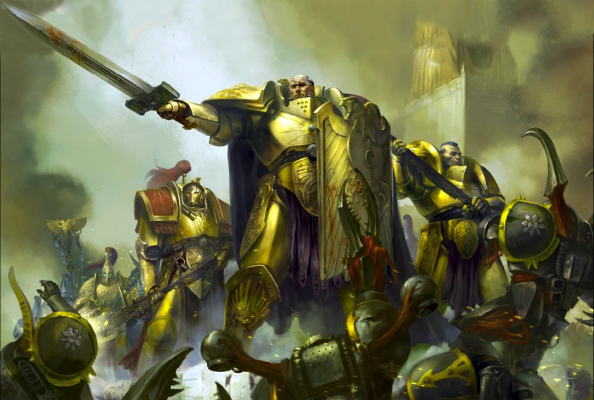

Trajann Valoris
| Trajann Valoris | |
|---|---|
| Captain-General of the Adeptus Custodes | |
 The Captain-General leading the Custodians at the Lion's Gate | |
| Captain-General of the Adeptus Custodes | |
| Tenure | late M41 – present |
| Predecessor | Andros Launceddre |
| Sovereign | Emperor of Mankind |
| High Lord of Terra | |
| Tenure | 999.M41 – present |
| Seat | Captain-General of the Adeptus Custodes |
| Seat previously vacant since | The War of the Beast (M32) |
| Status | Active; on Terra and in the field with the Indomitus Crusade |
| Allegiance | The Emperor of Mankind |
| Seat of office | Imperial Palace, Terra |
| Wargear | Watcher's Axe; Castellan Plate; Moment Shackle; misericordia |
| Known for | The defence of the Lion's Gate; leading the Custodes off Terra in the Era Indomitus |
Trajann Valoris is the Captain-General of the Adeptus Custodes, the Emperor's personal guard, and a High Lord of Terra. His office carries responsibility for the defence of the Sol System, Terra, the Imperial Palace and the Golden Throne, and the Custodes regard him as the Emperor's representative among them. Many in the Ten Thousand consider him the greatest warrior to hold the title since the Emperor walked among the stars.[1]
Valoris rose through the Allarus Terminators and the rank of Shield-Captain, built an intelligence network across the Segmentum Solar, and was raised to command after the death of Captain-General Andros Launceddre in a period of omens and paranoia remembered as the Years of Madness. At the urging of the Chancellor of the Senatorum, Lev Tieron, he took a seat among the High Lords in 999.M41, the first Captain-General to do so in many centuries.[1][2]
When the Great Rift opened, Valoris commanded the defence of the Imperial Palace against the daemons of Khorne at the Lion's Gate, fighting beside the newly returned Roboute Guilliman. The High Lords then suspended the laws that had held most of the Custodes to Terra for ten thousand years, and Valoris has since led the Ten Thousand into the Indomitus Crusade, to battlefields such as Gathalamor.[3]
The office of Captain-General
[edit]The Captain-General is the master of the Adeptus Custodes, charged with the defence of the Throneworld and of the Emperor's person, and with the conduct of the greatest campaigns fought by the Custodians. Since Constantin Valdor, the first and greatest of them, only seventeen warriors have held the office. Most died in battle; several became Eyes of the Emperor; three, Valdor among them, vanished in circumstances that remain a mystery even to the Custodes. Unlike the two Tribunes, who govern the order's ritual life, the Captain-General has no fixed remit and directs the forces under him with complete freedom. When the Ten Thousand deal with the Adeptus Terra, they deal through him.[1]
The Captain-General has the right to a seat among the High Lords of Terra, but by long tradition has taken it only in times of dire emergency, such as the War of the Beast in the 32nd millennium.[2]
Early career
[edit]Valoris ran two successful Blood Games, the Custodes' exercises in which they test the defences of the Palace by attempting to breach them, within his first decade of service, a record no Custodian has equalled. His aggression and grasp of strategy earned him a place among the Allarus Custodians, the Terminator-armoured elite of the order. He destroyed the space hulk Mournful Siren, broke the Genestealer Cult of the Emperor's Writhing Shadow and led a pre-emptive strike against WAAAGH! Krushfist.[1]
His weakness, the order's chroniclers record, was impatience with waiting for the enemy to come to him. After twenty-two years among the Companions he asked to be reassigned to a more active form of defence. As a Shield-Captain he spent centuries leading sorties against emerging threats in the Sol System and beyond. He learned to temper his aggression with foreknowledge: he watched his enemies, predicted their movements, and struck once and decisively, and he cultivated a network of agents and informers across the Segmentum Solar and further afield.[1]
Captain-General
[edit]The Years of Madness
[edit]Valoris was elevated during the so-called Years of Madness. They began with the disappearance of the conservative Captain-General Galahoth, and were marked by a surge of heretical and xenophile cult activity in the Sol System and by the possession of a group of the Custodes' own doomscryers. Their false prophecies sent Galahoth's successor, Andros Launceddre, to his death at the Battle of the Gilded Pyre, later called the Black Pyre. Valoris inherited Launceddre's armour and weapons, as tradition required, and moved at once to restore the order's control of Terra's defences.[1]
Reform of the Ten Thousand
[edit]Under Valoris the Custodes entered their most active century since the fall of Goge Vandire. The number of Blood Games increased tenfold, the defences of the stable warp routes into the Sol System were strengthened, and long-hidden cults were purged from the underhives of Terra. His Custodians eliminated a xenos threat of the highest classification among the void-fortresses of Pluto and launched thirty-two interdiction strikes beyond the Sol System, some, it is rumoured, by way of the broken spars of the Webway. Observers within the Palace have remarked that Valoris seemed to have prepared the Custodes for the return of a primarch and the birth of the Great Rift before either occurred. Some attribute this foresight to the Moment Shackle that he carries.[1]
High Lord of Terra
[edit]As the warp storms of the late 41st millennium multiplied and appeals for help came to Terra from every quarter, the Chancellor of the Senatorum Imperialis, Lev Tieron, pressed Valoris to take the vacant seat left by the death of Lord Brach, Chancellor of the Estate Imperium. Tieron's purpose was to secure a majority to suspend the provisions of Imperial law that bound the Custodes to Terra, and so to let the Ten Thousand take the war to the enemy. Valoris accepted. He was in closed session with the High Lords when news came of demigods battling across the surface of Luna: Roboute Guilliman had arrived at the end of the Terran Crusade.[2]
Era Indomitus
[edit]The Lion's Gate
[edit]
Guilliman had barely reached the Palace when the bow wave of the Great Rift's birth swept over the Sol System, and a host of Khornate daemons broke through reality to assault Terra itself. This was the Custodes' worst nightmare, and they met it by enacting their Catastrophe Protocols. Valoris took overall command of the Palace's defence and led a charge of four thousand Custodians out of the Lion's Gate to meet the invaders, fighting beside Guilliman's forces and the Sisters of Silence. The assault, known as the Battle of the Lion's Gate or the Second Battle of Terra, was thrown back, at a heavy cost in irreplaceable Custodians.[3][1]
The Ten Thousand go forth
[edit]After the battle the High Lords voted to suspend the restrictions of Imperial law that had kept the Custodes on Terra, and the order went to war across the galaxy as it had not since the Great Crusade. Custodian forces have joined the fleets of the Indomitus Crusade, and shield hosts have been sent to the aid of beleaguered worlds, while the order's watch over the Throne continues.[3]
Valoris has kept the Custodes' oldest duties alongside the new. Custodians still stand guard over the Golden Throne and the Sanctum Imperialis, and the order continues to hold the breaches into the Webway beneath the Imperial Palace, the remnants of the Emperor's project that the Custodes have defended since the Horus Heresy. Under his direction the Custodes have also renewed their ancient alliance with the Sisters of Silence, and the two orders once more fight side by side as the Talons of the Emperor. Custodian envoys, the Emissaries Imperatus, travel with the fleets and to the courts of distant Chapters, bearing the Captain-General's authority and reporting to him directly.[1][3]

On the cardinal world of Gathalamor, sacred to the Ecclesiarchy, the Word Bearers and their summoned daemons drove the Mordian 84th and the Sisters of the Order of the Argent Shroud into a last stand in the ruins of the macro-cathedrum. Valoris and Grand Master Aldrik Voldus of the Grey Knights teleported into the heart of the Traitor army and shattered it into warring bands, allowing the defenders to counter-attack and cleanse the world.[3]
Status
[edit]As of the latest records Trajann Valoris is alive and remains Captain-General of the Adeptus Custodes and a High Lord of Terra. He sits on the Senatorum reformed by the Lord Commander, divides his time between the defence of the Palace and command in the field, and directs the deployment of the Custodes across the Imperium in the Indomitus Crusade.[3][2]
Character
[edit]Within the Palace Valoris' name is spoken with reverence. The High Lords themselves may be mocked in private, but the Captain-General may not, for to mock him is to mock the Emperor, and such blasphemy would not go unpunished. He is described as decisive, aggressive by temperament and self-disciplined by choice, with an appetite for intelligence that leaves little on Terra unobserved. Imperial observers have noted that he treats the restored primarch with respect but without subordination, since the Custodes answer to the Emperor alone.[1]
His relationship with Roboute Guilliman has been the subject of much speculation in the Senatorum. Valoris supported the primarch's assumption of the regency and the reform of the High Lords, and the Custodes have fought alongside Guilliman's forces since the Lion's Gate. Yet the Captain-General has never placed the Ten Thousand under the Lord Commander's orders, and Imperial observers record that Custodian forces assigned to the Indomitus fleets act as allies rather than subordinates, withdrawing when the Captain-General recalls them.[2][3]
Wargear
[edit]On Launceddre's death Valoris took up the panoply made for the Captain-General after Valdor's disappearance and passed from holder to holder since:
- The Watcher's Axe, a master-crafted castellan axe that crackles with golden lightning, with a bolter called the Eagle's Scream in its haft.
- The Castellan Plate, ornate armour with a heraldic shield, an auramite halo and a cloak woven with adamantium thread.
- The Moment Shackle, a device of the Dark Age of Technology released from the vaults beneath the Palace, which captures fragments of time; it can excise a split second from history or slow time around its bearer.
- A misericordia, the blade of mercy carried by every Custodian as a sign that they stand above all law but the Emperor's.